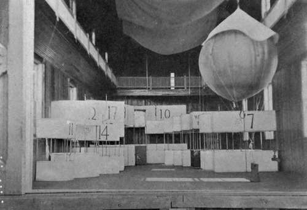

The Perils Of Flying. Part 2
Description
This section is from the book "The New Art Of Flying", by Waldemar Kaempffert. Also available from Amazon: The New Art of Flying.
The Perils Of Flying. Part 2
In this connection Prof. G. H. Bryan has pointed out that the distinction between equilibrium and stability should be kept in mind. An aeroplane is in equilibrium when travelling at a uniform rate in a straight line, or, again, when being steered round a horizontal arc of a circle. A badly balanced aeroplane would not be able to travel in a straight line. The mathematics of aeroplane equilibrium are probably very imperfectly understood by many interested in aviation, but they are comparatively simple, while the theory of stability is of necessity much more difficult.
It is necessary for stability that if the aeroplane is not in equilibrium and moving uniformly it shall tend toward a condition of equilibrium. At the same time it may commence to oscillate, describing an undulating path, and if the oscillations increase in amplitude the motion will be unstable. It is necessary for stability that an oscillatory motion shall have a positive modulus of decay or coefficient of subsidence, and the calculation of this is an important feature of the investigation.
At the present time it is certain that aviators rely entirely on their own exertions for controlling machines that are unstable, or at least deficient in stability, and they go so far as to declare that, owing to the danger of sudden gusts of wind, automatic stability is of little importance. Moreover, even in the early experiments of Pilcher, it was found that a glider with too V-shaped wings, or with the centre of gravity too low down, is apt to pitch dangerously in the same way that increasing the metacentric height of a ship while increasing its " statical" stability causes it to pitch dangerously. It thus becomes important to consider what is the effect of a sudden change of wind velocity on an aeroplane. If the aeroplane was previously in equilibrium, it will cease to be so, but will tend to assume a motion which will bring it into the new state of equilibrium consistently with the altered circumstances, provided that this new motion is stable. Thus an aeroplane of which every steady motion is stable within given limits will constantly tend to right itself if those limits are not exceeded. Excessive pitching or rolling results from a short period of oscillation combined with a modulus of decay which is either negative (giving instability) or of insufficient magnitude to produce the necessary damping.
More difficult than the maintenance of stability is the making of a turn. The dangers that await the unskilled aviator who first tries to sweep a circle have been sufficiently dwelt upon in Chapter VI. The canting of a machine at a considerable angle, which is necessary in order that the weight of the machine may be opposed to the centrifugal force generated in turning, necessarily implies that the aeroplane shall be at a height great enough to clear the ground. Yet many of the early experimenters wrecked their apparatus because they tried to make turns when too near the ground, with the result that one wing would strike the turf and crumple up like paper.
Fig. 65. The kite and balloon-house of the Mt. Weather Observatory.
Photograph by courtesy of the U. S. Weather Bureau.
Even at great heights the making of a turn is not unattended with danger, particularly when the machine is brought around suddenly. If a turn is made too abruptly, parts of the structure are sometimes strained to the breaking-point. There is good reason to believe that the Hon. C. S. Rolls was killed because he made too quick a turn.
Flying exhibitions, which tempt the prize-winning airmen to be overbold, are responsible for many of the tragedies that have occurred within the last few years. At the Reims meeting of 1910, as many as eighteen machines were circling around one another, swooping down, hawklike, from great heights, or cutting figure-of-eight curves to the plaudits of an enthusiastic multitude. It was not the possibility of collision that was so perilous, but the disturbance created in the air. The wake that every steamer leaves behind it has its counterpart in the wake that trails behind an aeroplane in the air. A rowboat may ride safely through the steamer's wake with much bobbing; an aeroplane caught in the wake of another pitches alarmingly. That was how the Baroness de la Roche met with such a terrible accident at the Reims meeting in question.
The various accidents which have occurred recently to aeroplanes raise the whole question of whether the construction of the wings is such as to give the requisite margin of safety to insure their not breaking under the loads which are likely to be thrown upon them in use. In all ordinary construction, as in building a steamboat or a house, engineers have what they call a factor of safety. An iron column, for instance, will be made strong enough to hold five or ten times the weight that is ever going to be put upon it, but if we try anything of the kind in flying-machines the resultant structure will be too heavy to fly. Everything in the work must be so light as to be on the edge of disaster. Some of the worst accidents on record are to be attributed to this necessarily flimsy construction. It is, of course, very difficult in the case of aeroplane accidents to ascertain which part broke first, for the fabric is generally so utterly destroyed that no details of the first breakage can be seen. Further, the aviator, who is the only man who can tell accurately what happened, is frequently killed, so that the only information available is what can be seen of the fall while the machine is in the air, and accidents occur so suddenly that different people do not always get the same impression of the sequence of events. There seems, however, little doubt that in several cases the wings collapsed in some way while the machine was flying, and that it fell in consequence.
Continue to: